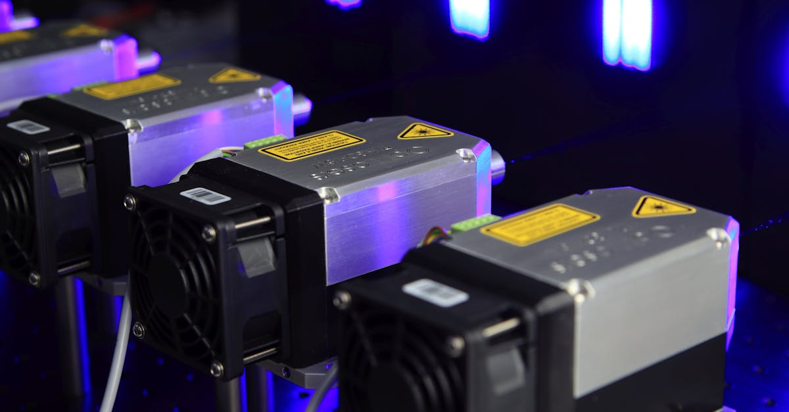

Le Nouveau Roi de la Bourse Chinoise : Une Victoire Technologique
Dans un mouvement qui redéfinit le paysage financier chinois, un fabricant de puces laser a récemment détrôné le géant des spiritueux Kweichow Moutai Co. pour s'adjuger le titre de l'action la plus chère de Chine continentale. Cette performance spectaculaire n'est pas anodine ; elle témoigne d'un changement profond dans les préférences des investisseurs, qui se détournent progressivement des piliers traditionnels de « l'ancienne économie » pour se tourner vers des secteurs de pointe, incarnés par la haute technologie. L'ascension fulgurante de cette entreprise, dont le nom reste encore relativement discret pour le grand public international, marque un tournant stratégique. Elle souligne la reconnaissance croissante du potentiel de croissance et de rentabilité des entreprises axées sur l'innovation, en particulier dans des domaines critiques comme les semi-conducteurs et les technologies laser, essentielles à de nombreuses révolutions industrielles en cours, de la 5G à l'intelligence artificielle. Cette valorisation stratosphérique, mesurée au prix par action, place cette société dans une ligue à part, dépassant même la valeur symbolique et historique de Moutai, longtemps perçu comme un baromètre de la consommation et de la richesse chinoise. L'écart de prix entre ces deux entités illustre la nouvelle prime accordée à l'innovation sur le marché boursier chinois. Les investisseurs semblent privilégier la promesse de rendements futurs tirés par la technologie plutôt que la stabilité éprouvée des biens de consommation établis. Ce phénomène pose des questions fascinantes sur l'avenir des marchés émergents et sur la manière dont la perception de la valeur évolue à l'ère numérique. La comparaison directe avec Moutai, dont le succès repose sur un produit culturellement ancré et une demande stable, met en lumière la prise de risque calculée que les investisseurs sont désormais prêts à assumer pour des entreprises à fort potentiel technologique.
👉 À lire : Netflix : Chute en Bourse après des Perspectives Décevantes

De l'Alcool aux Lasers : L'Évolution de l'Appétit des Investisseurs
Pendant des années, Kweichow Moutai a été l'incarnation du succès boursier en Chine. Son baijiu, un alcool de sorgho réputé, a non seulement conquis les palais chinois mais a également séduit les investisseurs, faisant de l'entreprise un symbole de prospérité et un choix sûr. Son prix par action élevé était souvent cité comme un indicateur de la puissance économique et du pouvoir d'achat croissant de la classe moyenne chinoise. Cependant, le marché financier, par nature dynamique et prospectif, ne reste jamais figé. L'émergence d'un fabricant de puces laser au sommet de la hiérarchie des valorisations boursières signale une réorientation stratégique des capitaux. Les investisseurs ne cherchent plus seulement la valeur établie, mais l'innovation disruptive et le potentiel de croissance exponentielle. Les puces laser, composants fondamentaux pour des technologies comme les télécommunications optiques, la chirurgie assistée par laser, les systèmes de conduite autonome et, bien sûr, les infrastructures nécessaires à l'intelligence artificielle, représentent l'avenir. La capacité d'une entreprise à innover et à dominer ces marchés de niche à forte croissance est désormais récompensée par des multiples de valorisation plus élevés. Ce glissement n'est pas unique à la Chine ; on observe des tendances similaires dans les marchés développés, où les géants technologiques dominent largement les indices boursiers. Néanmoins, le fait qu'une entreprise chinoise, dans un secteur aussi stratégique et techniquement exigeant que celui des semi-conducteurs, puisse atteindre une telle valorisation, est particulièrement significatif. Cela démontre la montée en puissance de la Chine non seulement en tant que marché de consommation, mais aussi en tant que centre d'innovation technologique mondial. Le passage de témoin symbolique entre Moutai et le fabricant de puces laser est une illustration puissante de cette transition, où la promesse de la technologie de demain l'emporte sur la solidité des acquis d'hier.
👉 À lire : IA: 50M$ pour influencer la politique US
Les Puces Laser : Le Moteur Invisible de la Prochaine Révolution Technologique
Au cœur de cette nouvelle valorisation boursière se trouvent les puces laser, des composants minuscules mais d'une importance capitale. Loin d'être de simples gadgets, elles sont les briques élémentaires de nombreuses technologies qui façonnent notre présent et surtout notre avenir. Dans le domaine des télécommunications, elles sont indispensables pour la transmission de données à haut débit via la fibre optique, le socle de l'internet moderne et des réseaux 5G/6G. Dans le secteur automobile, elles sont le cœur battant des systèmes LiDAR (Light Detection and Ranging), cruciaux pour le développement des véhicules autonomes, permettant de cartographier l'environnement en temps réel. L'industrie médicale bénéficie également énormément de ces avancées, avec des applications allant de la chirurgie de précision aux diagnostics avancés. Et bien sûr, l'intelligence artificielle, sujet qui nous passionne chez CryptoMind AI, repose en grande partie sur la puissance de calcul et la vitesse de transmission de données que seules des infrastructures basées sur des technologies avancées peuvent fournir. Les puces laser sont donc des facilitateurs clés pour l'IA, que ce soit pour l'entraînement de modèles complexes ou pour l'inférence en temps réel. La domination d'un fabricant chinois dans ce domaine souligne les ambitions de Pékin de devenir autosuffisant et leader mondial dans les technologies critiques. Les investissements massifs dans la recherche et le développement, combinés à un marché intérieur colossal, créent un écosystème favorable à l'émergence de champions technologiques. La valorisation de cette entreprise reflète donc non seulement sa performance actuelle, mais aussi les attentes considérables concernant son rôle futur dans l'écosystème technologique mondial. C'est une reconnaissance de la valeur intrinsèque de l'innovation et de la capacité à résoudre des problèmes technologiques complexes qui ouvrent de nouveaux marchés et créent de nouvelles industries.

L'Impact sur les Stratégies d'Investissement et la Diversification
Ce changement de paradigme sur le marché boursier chinois a des implications profondes pour les stratégies d'investissement. Les investisseurs traditionnels, habitués à privilégier les entreprises établies et les secteurs défensifs comme les biens de consommation ou l'immobilier, doivent désormais réévaluer leurs portefeuilles. L'ascension des valeurs technologiques, bien que potentiellement plus volatile, offre des perspectives de croissance supérieures. Cela nécessite une meilleure compréhension des dynamiques de ces secteurs, une analyse approfondie des cycles d'innovation et une évaluation des risques spécifiques liés à la propriété intellectuelle, à la concurrence mondiale et aux réglementations gouvernementales. Pour les investisseurs cherchant à capitaliser sur cette tendance, la diversification devient essentielle. Il ne s'agit plus seulement de choisir entre différentes entreprises d'un même secteur, mais d'intégrer des classes d'actifs et des géographies variées. Le marché chinois, avec ce nouveau leadership technologique, devient une composante de plus en plus incontournable pour un portefeuille diversifié. Cependant, il est crucial d'aborder ces investissements avec discernement. La haute valorisation des entreprises technologiques peut parfois masquer des risques importants, et une analyse fondamentale rigoureuse reste indispensable. Il faut examiner la santé financière de l'entreprise, sa stratégie de développement, sa position concurrentielle et la qualité de sa gestion. En parallèle, l'émergence de ces leaders technologiques en Chine peut également influencer les marchés d'autres régions, créant des opportunités mais aussi des défis compétitifs. La capacité à identifier les tendances émergentes et à investir dans les entreprises qui les incarnent est plus que jamais la clé du succès. Cela implique souvent de regarder au-delà des titres les plus médiatisés pour découvrir les acteurs de niche qui détiennent des technologies clés, comme ces fabricants de puces laser. La réallocation des capitaux vers la technologie est une tendance de fond qui devrait s'accentuer dans les années à venir.
L'IA et la Technologie : Un Duo Gagnant pour les Marchés Financiers
Chez CryptoMind AI, nous suivons de près l'intersection entre l'intelligence artificielle et les marchés financiers, et cette actualité chinoise en est une parfaite illustration. L'essor des entreprises technologiques, notamment dans des domaines aussi critiques que les puces laser, est intrinsèquement lié aux avancées de l'IA. Ces puces sont non seulement des composants essentiels pour le développement de systèmes d'IA plus performants, mais elles sont aussi le fruit d'une recherche et d'une production de plus en plus optimisées par l'IA elle-même. Les algorithmes d'apprentissage automatique sont utilisés pour concevoir de nouveaux matériaux, améliorer les processus de fabrication des semi-conducteurs et prédire les défaillances. Cette synergie crée un cercle vertueux où l'IA accélère l'innovation technologique, et où les innovations technologiques, à leur tour, fournissent les outils nécessaires à une IA plus puissante. Pour les investisseurs, comprendre cette relation est fondamental. Les entreprises qui maîtrisent à la fois le développement de technologies de pointe et l'application de l'IA pour optimiser leurs opérations et leurs produits sont celles qui présentent le plus fort potentiel de croissance. Le succès du fabricant de puces laser chinois peut être vu comme une validation de cette tendance. Il est probable que des stratégies d'investissement sophistiquées, incluant l'utilisation d'outils basés sur l'IA, aient permis d'identifier cette opportunité avant qu'elle ne devienne évidente pour le marché dans son ensemble. L'analyse prédictive, la détection d'anomalies sur les marchés et l'optimisation des portefeuilles sont des domaines où l'IA transforme déjà la gestion d'actifs. Le fait que des entreprises technologiques chinoises soient à la pointe de l'innovation matérielle et logicielle renforce leur attractivité. Cela souligne l'importance d'une veille technologique et financière constante. Le paysage des investissements évolue rapidement, et les outils d'analyse avancée, comme ceux que nous développons, deviennent indispensables pour naviguer dans cette complexité. La convergence entre l'IA et la technologie matérielle est une tendance majeure qui redéfinit les champions de demain.

Les Défis et les Risques Associés à la Montée de la Technologie en Chine
Malgré l'enthousiasme suscité par l'ascension de ces entreprises technologiques, il est crucial d'aborder ce secteur avec une conscience aiguë des risques et des défis inhérents. La valorisation élevée du fabricant de puces laser, par exemple, bien qu'indicative de son potentiel, le rend également plus vulnérable aux corrections de marché. Une simple déception dans les résultats trimestriels ou un ralentissement de la demande mondiale pourrait entraîner une chute significative de son cours. De plus, le secteur des semi-conducteurs est notoirement cyclique, dépendant des cycles d'investissement des fabricants de puces et de la demande des industries utilisatrices. La concurrence est également féroce, non seulement entre les entreprises chinoises mais aussi face aux géants établis en Corée du Sud, à Taïwan, aux États-Unis et au Japon. Les guerres commerciales et les tensions géopolitiques peuvent également avoir un impact majeur. Les restrictions à l'exportation de technologies clés, les barrières douanières ou les interdictions d'accès à certains marchés peuvent freiner la croissance, même pour les entreprises les plus innovantes. Le gouvernement chinois joue un rôle prépondérant dans ce secteur, à la fois comme soutien financier et comme régulateur. Si les subventions et les politiques favorables peuvent stimuler la croissance, elles peuvent aussi créer une dépendance et introduire des distorsions. Les changements soudains dans les politiques gouvernementales peuvent avoir des conséquences imprévisibles. Enfin, la question de la propriété intellectuelle et de la protection des technologies reste un sujet sensible. Les investisseurs doivent donc évaluer attentivement la résilience de ces entreprises face à ces différents risques. La diversification géographique et sectorielle reste une stratégie clé pour atténuer ces potentiels écueils. Il est également essentiel de privilégier les entreprises dotées de solides avantages concurrentiels, d'une gestion expérimentée et d'une stratégie claire pour naviguer dans un environnement complexe et en rapide évolution.
Conclusion : L'Avenir des Marchés Financiers, un Écho Technologique
L'histoire de ce fabricant de puces laser qui surpasse Kweichow Moutai en termes de valorisation boursière en Chine n'est pas seulement une anecdote financière ; c'est un signal fort de l'évolution structurelle des marchés. Elle illustre le passage d'une économie basée sur les actifs tangibles et les biens de consommation traditionnels à une économie de plus en plus dominée par l'innovation, la technologie et les actifs incorporels. Pour les investisseurs, cela signifie une nécessité impérieuse de s'adapter. Ignorer la montée en puissance de la technologie, et notamment de l'intelligence artificielle qui en est à la fois un moteur et un bénéficiaire, serait une erreur stratégique coûteuse. Chez CryptoMind AI, nous croyons fermement que les outils d'IA, lorsqu'ils sont utilisés judicieusement, peuvent offrir un avantage significatif pour naviguer dans ces marchés complexes. Que ce soit pour identifier des opportunités cachées, gérer les risques ou optimiser les stratégies de trading, l'IA est en train de devenir un partenaire indispensable. La performance du fabricant de puces laser démontre que la valeur se trouve désormais dans la capacité à innover et à maîtriser les technologies d'avenir. Ce n'est pas seulement une tendance chinoise, mais un phénomène mondial qui redessine le paysage économique. Les entreprises qui sauront tirer parti de la puissance de calcul, de l'analyse de données et de l'automatisation, souvent grâce à l'IA, seront celles qui prospéreront. L'avenir des marchés financiers sera, sans aucun doute, de plus en plus technologique. Se préparer à cette réalité, en adoptant les bonnes stratégies et les bons outils, est essentiel pour quiconque souhaite réussir dans cet environnement en constante mutation. La capacité à anticiper et à s'adapter sera la clé du succès.